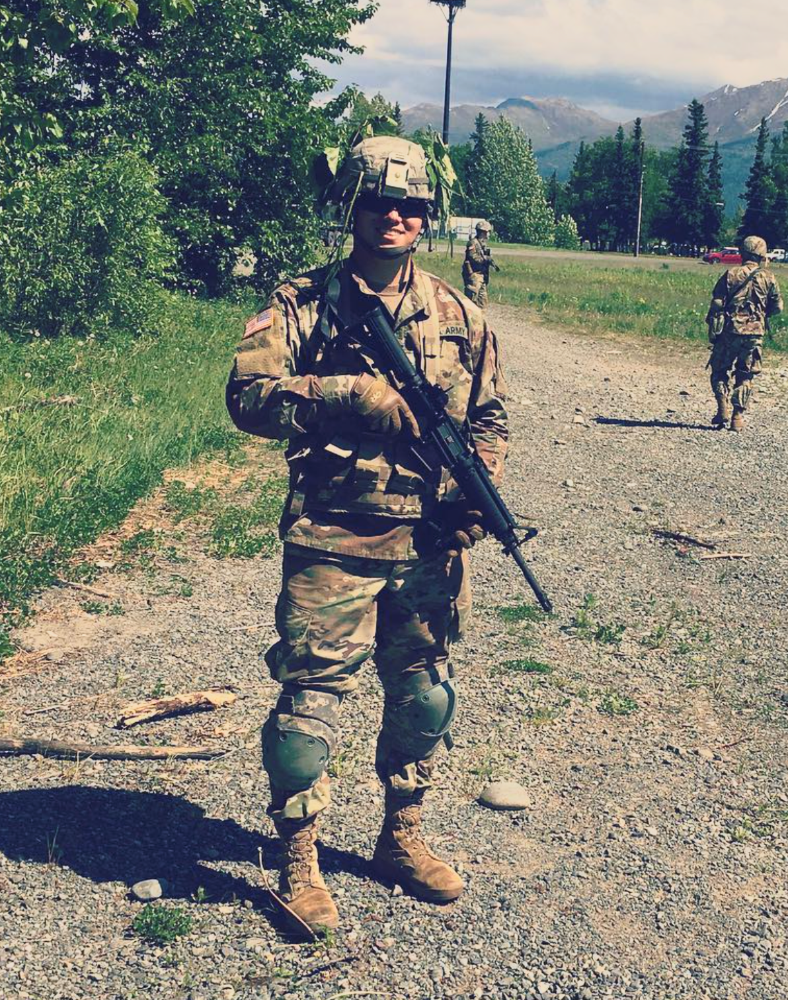

Early years
Hello my name is Andrew Leon I'm 31 years young sometimes I forget how old I am until I say it out loud, I am Mexican American grew up with a single mom, My dad was still in my life just didn't live with us, growing up I had bright red hair that I used to hate my hair color naturally darkened with age until it was just light brown. I have lived in California my whole life Southern California especially mainly OC, and LA county. My two biggest loves as a kid was skateboarding and computers mainly games but I loved building and modifying them and messing with software code, in school I was an average student usually maintained a 3.0 my early years are kinda boring I was just a typical California kid in the late 90's and early 2000's.Army Service
This time in my life was just me being young and dumb looking back it was alot of wasted time. After high school I partied a lot was atteneding a community college at the time but that was the last thing on my mind long story short about my education was I basically failed every class I had but one. Finally after a couple of years of working and doing nothing my aunt told me about the Army and at first I was intrested but then I read about the drummer from Nirvana who read a quote from some old greek philospher saying that I man hasn't lived until he has been a warrior and artist and a father, I had been in a band father hood was way in the future but the warrior part I could do, so I called my aunt she called some friends and within the month I was in Kansas doing my basic training met good friends but didn't have a good time. after basic I was stationed in Alaska that was a lot more fun then I had initially thougt there I became my company armorer and just a reliable soldier that anyone can depend on I met my wife fell in love and got married and had a baby after my daughter was born I knew I didn't wanna stay in the army it just scared me to think of going off to fight a war that meant nothing like the war in Afghanistan so when our contracts were up my wife and I left and begame civilians again.Present/Future
As of right now just working basic job while I pursue my bachleors degree within my time leaving the army and now I had another daughter just a beautiful and healthy as the first, but for current times there isn't to much intresting things going on except my family, and for the future well we'll see. 